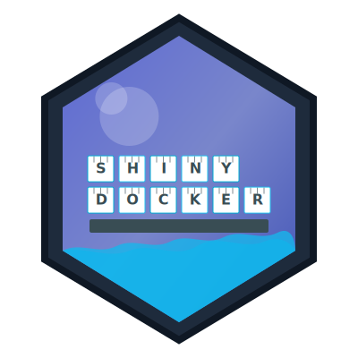

shinydocker 
shinydocker simplifies containerizing Shiny applications by automatically generating Docker configurations, building images, and managing containers. It supports both R and Python Shiny apps with intelligent detection of app type and dependencies.
[!IMPORTANT]
This package is currently in the prototype/experimental stage. It is not yet available on CRAN and may have bugs or limitations.
Installation
You can install the development version of shinydocker from GitHub with:
# install.packages("remotes")
remotes::install_github("coatless-rpkg/shinydocker")Prerequisites
- R (>= 4.4.0)
-
Docker installed and running (no login required)
- Optionally, Docker Compose for more advanced container management
Quick Start
With shinydocker, you can containerize your Shiny app in just a few lines of code. Here’s two ways to get started with the package!
One-Command Export
The simplest way to containerize a Shiny app is to use the shinydocker::export() function:
library(shinydocker)
# Export app to Docker with a single command (detects app type automatically)
shinydocker::export("path/to/your/shinyapp", run = TRUE)Example: Converting the “Hello World” Shiny App
To get started, let’s convert the classic “Hello World” Shiny app to a Docker container:
# Copy the Hello World example from the shiny package
app_dir <- "hello_world_app"
system.file("examples", "01_hello", package = "shiny") |>
fs::dir_copy(app_dir, overwrite = TRUE)
# Export to Docker and run
shinydocker::export(app_dir, run = TRUE, detach = TRUE)
# The console will show a URL where you can access your containerized app
# Stop the container when done
shinydocker::stop_container()Step-by-Step Workflow
For more control over the containerization process:
library(shinydocker)
# 1. Create Docker configuration
shinydocker::dockerize("path/to/your/shinyapp")
# 2. Build Docker image
shinydocker::build_image("path/to/your/shinyapp")
# 3. Run the container on port 8080
shinydocker::run_container("path/to/your/shinyapp", port = 8080, detach = TRUE)
# 4. When done, stop the container
shinydocker::stop_container("path/to/your/shinyapp")R or Python Shiny Apps
shinydocker automatically detects and containerizes either R or Python Shiny apps by detecting the app type and dependencies in the app directory. The app type is determined by the presence of either a app.R/server.R/ui.R file for R Shiny apps or a app.py/server.py/ui.py file for Python Shiny apps. Dependencies are detected automatically from the app source for R Shiny apps and a requirements.txt file for Python Shiny apps.
Therefore, you can use the same export() function for both R and Python Shiny apps:
shinydocker::export("path/to/your/python_shinyapp", run = TRUE)Examples
More examples are available in the package’s inst/examples/shiny directory.
Advanced Configuration
For more advanced use cases, you can customize the containerization process with additional options. You can pass these options to the dockerize() function.
Custom Port Mapping
# Run the container on a specific port
shinydocker::run_container("path/to/your/shinyapp", port = 3000)Custom Dockerfile Template
For advanced customization, you can provide your own Dockerfile template:
# Use a custom Dockerfile template
shinydocker::dockerize("path/to/your/shinyapp",
custom_dockerfile = "path/to/custom/Dockerfile")Diagnostic Tools
shinydocker provides two situation report (sitrep) functions that offer diagnostic information about your Docker environment and app containerization readiness.
Check Docker Environment
# Check if Docker is correctly set up
shinydocker::sitrep_docker()Analyze App Containerization Readiness
# Check if your app is ready for containerization
shinydocker::sitrep_app_conversion("path/to/your/shinyapp")Container Management
shinydocker provides functions to manage your Shiny app containers so that you can start, stop, and clean up containers with ease without needing to remember Docker commands or jump into terminal.
Running Containers
# Run with docker-compose (if available)
shinydocker::run_container("path/to/your/shinyapp", docker_compose = TRUE)
# Run with plain docker
shinydocker::run_container("path/to/your/shinyapp", docker_compose = FALSE)Stopping Containers
# Stop container for a specific app
shinydocker::stop_container("path/to/your/shinyapp")
# Stop all running containers
shinydocker::stop_container()Cleanup
# Remove containers for a specific app
shinydocker::cleanup_container("path/to/your/shinyapp")
# Remove all shinydocker containers and images
shinydocker::cleanup_container(remove_images = TRUE, force = TRUE)
# Clean up and run docker system prune
shinydocker::cleanup_container(prune = TRUE)Troubleshooting
If you encounter issues:
- Run
shinydocker::sitrep_docker()to check Docker installation - Run
shinydocker::sitrep_app_conversion("path/to/your/shinyapp")to analyze app issues - Check for port conflicts with
shinydocker::is_port_available(3838)
Need more help? Consider opening an issue on the repository.
Citation
If you use shinydocker in your research or project, please consider citing it:
citation("shinydocker")